What is dbt?
dbt (data build tool) is a tool that allows you to easily build and maintain data pipelines and data warehouses. Recently it gained more and more popularity as it bridges the gap between data engineering and data analytics and subsequently enabling the emergence of analytics engineering as a field.
There are two major data integration processes used in data pipelines, called ETL and ELT. The key difference between both lies in the order of operations.
- In ETL, the data is first extracted from the source system, then transformed and finally loaded into the data warehouse.
- While in ELT, the data is extracted from the source system, loaded into the data warehouse and transformed afterwards. So in contrast to ETL, upon arrival in the data warehouse, the data is still raw.
dbt is commonly used in the transformation part of ELT because it facilitates the creation and maintenance of data transformations in a way that is testable and version controlled. Hence it allows you to transform and analyze your data in a structured and documentable way, while tailoring it to your client's needs.
Why dbt?
There are a lot of reasons why you should use dbt where some of them are mentioned below:
- It is open source and free to use
- It is very easy to use. You can start using it in a few minutes
- It is very easy to test. You can easily test your models
- It is very easy to document. You can easily document your models
- It is very easy to version control. You can easily version control your models
- It is very easy to deploy. You can easily deploy your models to different environments
- It is very easy to automate. You can easily automate your models
- It is very easy to integrate. You can easily integrate it with other tools
- It is very easy to maintain. You can easily maintain your models
How does dbt work?
dbt is basically adding a modeling layer to the data warehouse. We get the raw data and run it through dbt models. Each dbt model is a .sql file which is depending either on the raw data or on other dbt models. The output of the dbt models is then stored in the data warehouse as views or tables.
In a standard dbt project you have the following layers:
- raw data
- staging models: where you can clean the data (rename columns, remove duplicates, etc.)
- prep models: where you can aggregate the data (sum, count, etc.)
- analysis models or mart models: where you can analyze the data (calculate the average, etc.)
These mart models often are seperated by stakeholder groups. So you have mart models for the marketing team, mart models for the sales team, etc. and they are organized in different folders and in different schemas within the data warehouse.
dbt repositories
One of the dbt aims is to create a flow where your work will be version controlled. That's why all the code that dbt will need to model the data has to be a part of a repository. You will need to create a new repository in your GitHub that will follow this structure:
dbt_project.yml- defines the project and global variables/pathsdbt_packages- used if any external packages are used (same like pandas in python)logs- logs of alldbtrunsmacros- will store the code that might be repeated (like a function in python)models:staging— creating our atoms, our initial modular building blocks, from source dataprep(intermediate) — stacking layers of logic with clear and specific purposes to prepare our staging models to join into the entities we wantmarts— bringing together our modular pieces into a wide, rich vision of the entities our organization cares about - for the stakeholers
seeds— seeds are CSV files in yourdbtproject (typically in your seeds directory), thatdbtcan load into your data warehouse using thedbt seedcommandsnapshots— analysts often need to "look back in time" at previous data states in their mutable tables. While some source data systems are built in a way that makes accessing historical data possible, this is not always the case.dbtprovides a mechanism, snapshots, which records changes to a mutable table over timetarget— where the compiled SQL code is savedtests— tests are assertions you make about your models and other resources in yourdbtproject (e.g. sources, seeds and snapshots). When you rundbt test,dbtwill tell you if each test in your project passes or fails.
dbt core and dbt cloud
There are two ways of using dbt.
- dbt Core: An open-source project. It’s free to use, but it requires technical knowledge as you have to set it up locally on your computer.
- dbt Cloud: A commercial product.
dbt cloudis basicallydbtcore with a lot of additional out-of-the-box features like job orchestration, which you would have to do on your own in the open-source version.
In our week we will use the beginner-friendly dbt cloud.
1. Create a Git Repository
We will need a repository with the codebase for data modeling / data pipeline:
| 0. | Create a new Repository in your personal GitHub account. Click the link here on the right, or go to GitHub to your repositories and click the green button "New". Call it something like "dbt_meteostat". For | Create a new GitHub Repo |
2. Setup dbt Cloud
dbt cloud account with initial configuration
| 1. | Go to dbt cloud sign up page | dbt cloud sign up page |
| 2. | Provide all the information needed to create an account and click on Create my account | 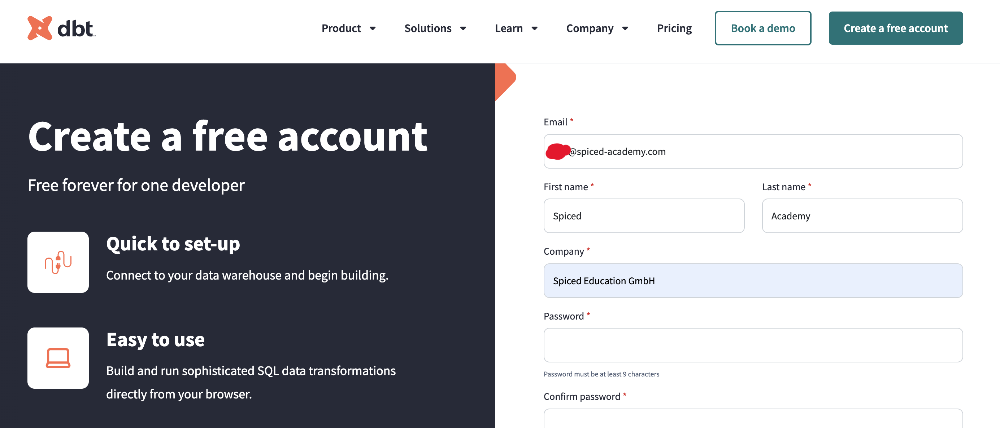 |
| 3. | Make sure you click on the verification email | 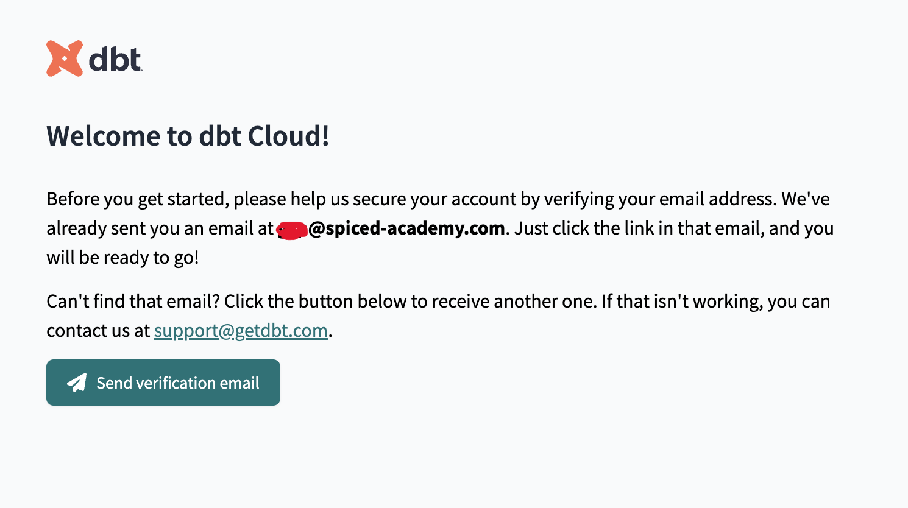 |
| 4. | As we already have a database ready, select the I have a data warehouse option | 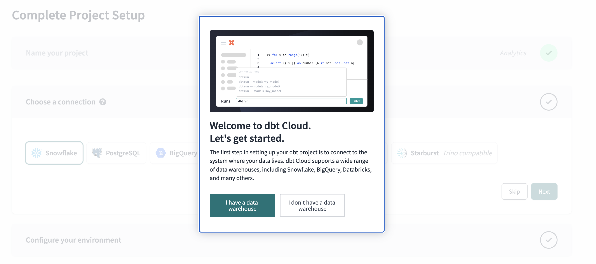 |
| 5. | Choose PostgreSQL and click on Next | 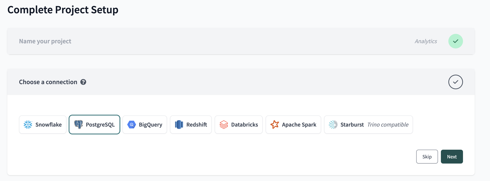 |
| 6. | Provide the database credentials: host, port and database name (that's the new database that you've just created) | 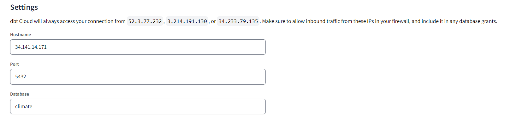 |
| 7. | Under Development Credentials provide your credentials including username (should be postgres), password to the instance and the schema that should be set to public | 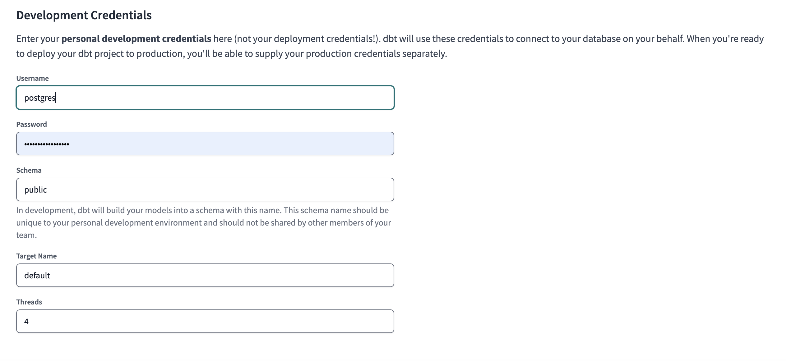 |
| 8. | Test your database connection! | 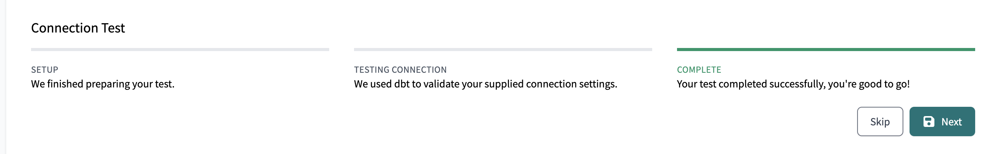 |
| 9a. | Setup a repository (Option A): The easiest way is to allow dbt to securely login to your github. |
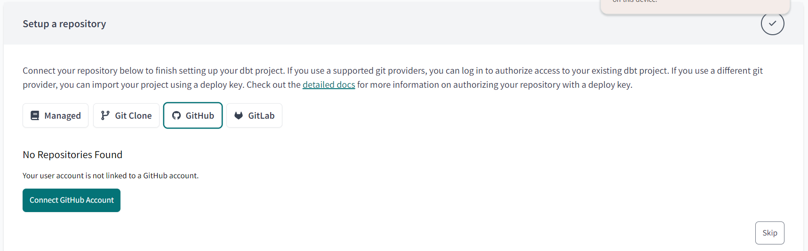 |
| 9b. | Setup a repository (Option B): dbt can also get access to a github repo using ssh key |
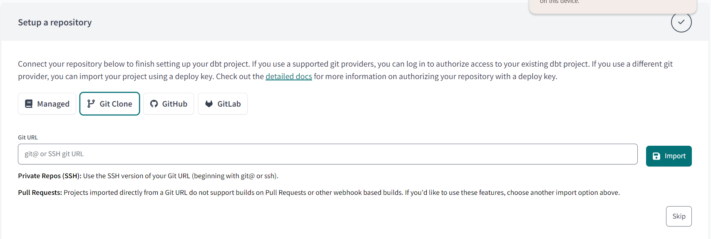 |
| 10. | Copy the ssh connection and the link taken from your repository (check it on github.com) under the Code button. | 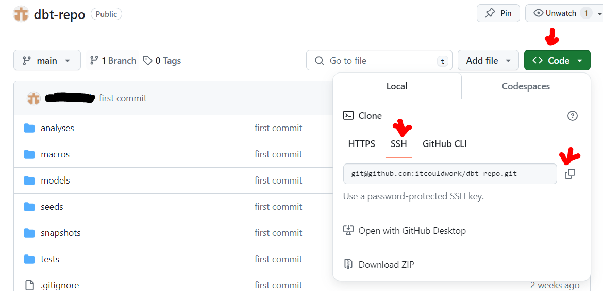 |
| 11. | Paste the link to dbt setup. It will generate an ssh key. You need to add to the repo on github.com.
|
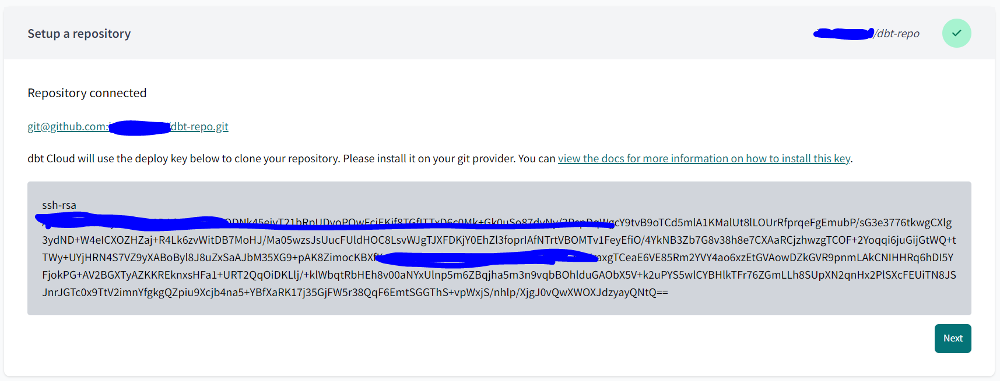 |
| 12. | In your GitHub: - click on your image in the top right corner, choose Settings from the menu - from the menu on the left select SSH and GPG keys - click the green button "New SSH Key" | 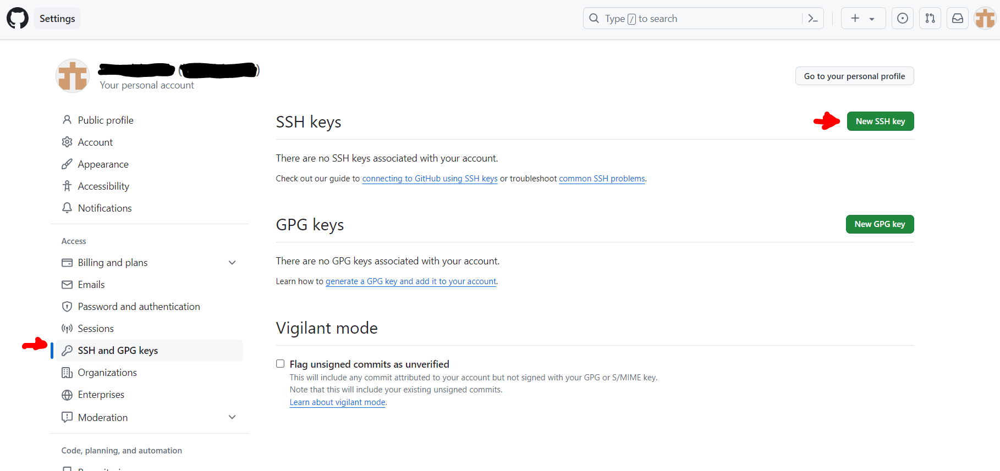 |
| 13. | In your GitHub:
|
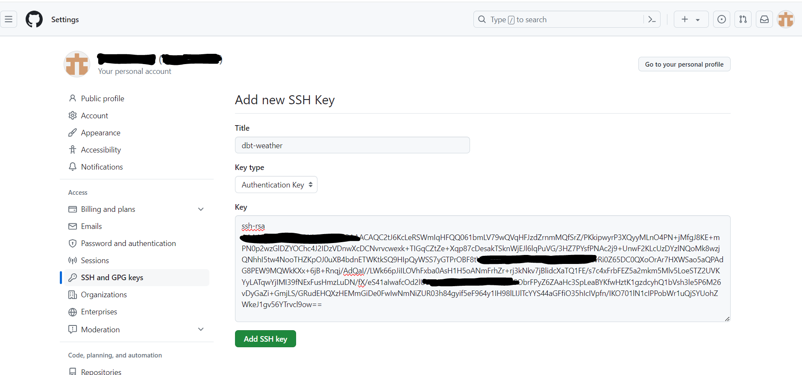 |
| 14. | In your GitHub: you should now see the ssh key | 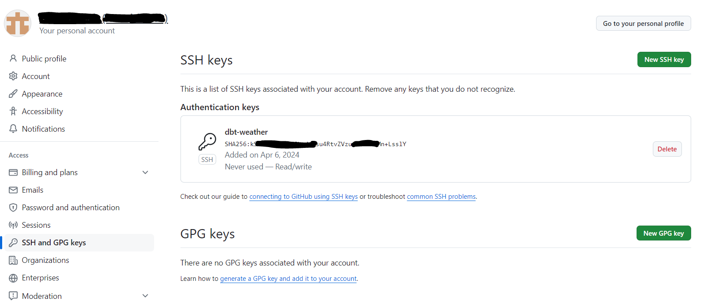 |
| 15. | Back to dbt repository setup. Click the Button "Next". If everything worked you might see a similar message... | 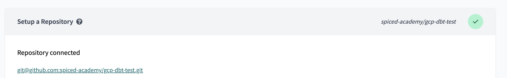 |
| 16. | ... and your dbt project is ready! | 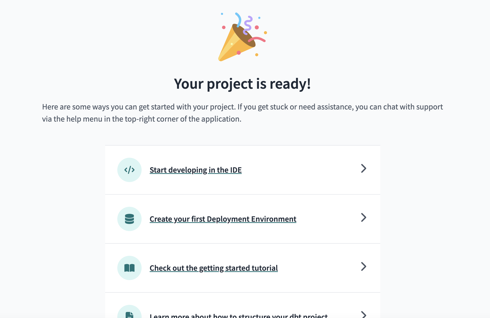 |
| 17. | Go to your Account Settings (using the icon in the top right corner) and go to the Billing section from the menu on the left side. Make sure you're using the developer plan which is free of charge and allows you to have one project at a time | 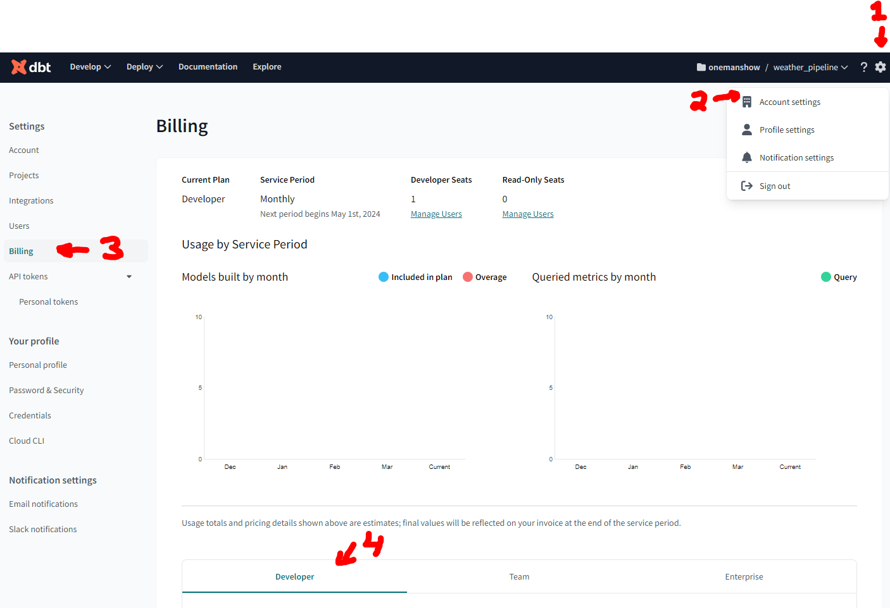 |
| 18. | In the navigation bar go to Initialize dbt project It will create all the necessary folders. dbt will synchronise with GitHub and show the repo on the left under "File Explorer". Above that is the Version Control Section. Note: We don't need to create a branch. |
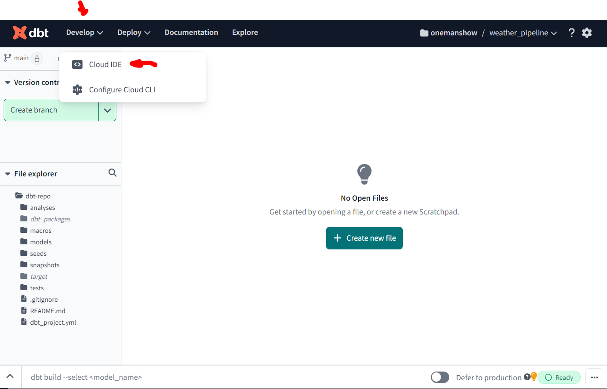 |